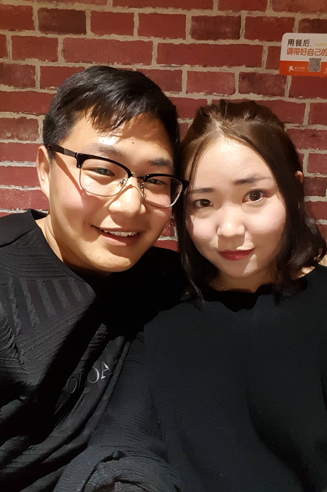

-
Days 346
2017年8月1日，在兰大对面的咖啡陪你，这张照片代替我们见了家长，照片里的黑衣服是宝宝和我一起在万达挑选的，我最喜欢的衣服！
-
Days 256
2017年5月3日，第一次和宝宝一起去黄河边，五月份的黄河边，很惬意，两个人还一起在黄河边捡石头、喝啤酒和抽烟，我有照片为证！
-
Days 196
2017年3月4日，宝宝春假回来第二天，做完头之后，一起去榆中校区，去后市吃了烤肉饭和麻辣拌，然后在校园里逛哟，刚好遇到下雪，好美！
-
Days 259
2017年5月6日，和宝宝在万达的日常，接宝宝下课，然后吃好吃的，逛商场，拍这张照片的时候，宝宝正在试帽子。
-
Days 368
2017年8月23日，宝宝新学期开学返校的日子，在机场和宝宝分别时拍的，虽然两个人此时面带笑容，稍后却都泪流满面。
-
Days 290
2017年6月6日，之前由于实验室的事情，没来得及拍毕业照，宝宝和我一起去拍毕业照，两个人在图书馆拍毕业照的时候，产生了在青春偶像剧里的错觉。
-
 Days 199
2017年3月7日，宝宝春假回来看我的时候，我719室友请吃饭，在定西路上的大漠烤肉吃的烧烤，算是第一次带宝宝见我的好朋友，正式进入我的交际圈子。
-
Days 282
2017年5月29日，端午假期，拍摄于西安，具体是钟楼还是鼓楼上，傻傻分不清，是我和宝宝的第一次旅行，带宝宝见了我最好的朋友刘家虎，也算是我的毕业旅行。
-
Days 316
2017年7月2日，周天中午两个人一起在万达吃完饭，送宝宝去上课的时候电梯里拍的，一人一个墨镜，假装两只终结者降临，酷！
-
Days 256
2017年5月3日，第一次一起去黄河边的时候，黄河铁桥的合照，发给我爸妈看过，带着它和我一起去北京面签，在我书桌旁陪我工作，每天一低头就能看到它，无比幸福！
-
Days 348
2017年8月3日，咕咕机收到之后迫不及待的试了一下，效果很棒！和宝宝恋爱一周年的礼物，买了超级多的纸，据说可以用20年！还买了一只大熊、蛋糕和花花（没找到一周年的照片），一周年快乐！
-
Days Forever
2017年3月10日，在去机场的动车上拍的，后来一直拿它作为我的手机锁屏。戒指是宝宝春假回来两个人一起在西关什字买的，银的，早日变成带钻的！
-
Days 196
2017年3月4日，榆中校区图书馆负一楼走廊的长椅上，记得当时期末的时候超喜欢坐在这里背书复习。宝宝说我戴帽子好看，然后就戴上了，咔嚓拍了一张，看侧脸确实还可以哈，有点韩国欧巴的感觉，不过宝宝最美！
-
Days 465
2017年11月28日，感谢微信粑粑给我和宝宝的异国恋提供聊天和沟通的平台！感谢微信粑粑给了一次破世界记录的机会，87小时34分钟01秒！当我把这个消息发532群里的时候，大家都说：“好强！87分钟啊”，当我解释说87小时的时候，他们都惊呆了！噢耶！
-

Days 195
2017年3月3日，电视上看过，觉得很浪漫，虽然可能感觉有些老土。但还是准备了好久，宝宝晚上的飞机到，我从中午开始一个花瓣一个花瓣的摆，床比较软，有时候一起身，之前摆好的就会弄乱！
-
Days 201
2017年3月9日，两个人穿着情侣小白鞋，坐在公交车的最后一排，手牵手。最近宝宝又买了一对踢不烂的情侣鞋，等我去大美帝的时候，又可以一起穿着照相了！
-
Days 260
2017年5月7日，鼎火锅，宝宝特别喜欢吃火锅，就像我送花喜欢送干花一样，因为不求鲜艳但愿长久。暑假两个人吃了好多火锅，期待两个人一起在自己的小窝里动手吃火锅！
-
Days 160
2017年2月，说来和宝宝也算是半个网恋，直到恋爱195天之后才正式的见面、牵手、拥抱。这期间没有合照，于是宝宝通过淘宝定做了这对小人，算是我们恋爱后的第一张合照，现在一直摆在我的书桌旁。
-
Days Future
2017年6月6日，290天。不过，这张照片的比心，让我坚信，我们的未来，会更好！！！